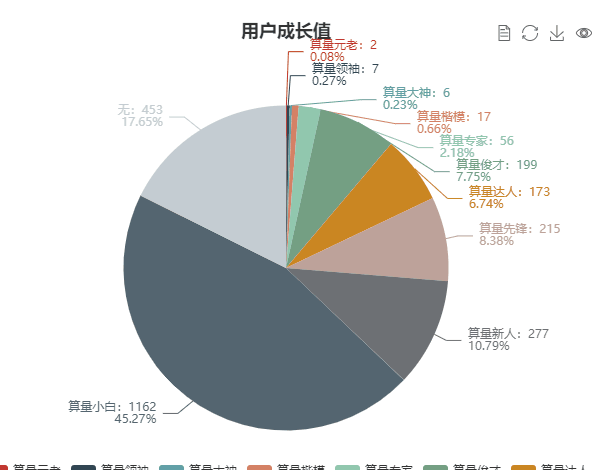
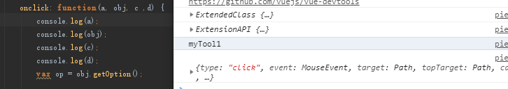
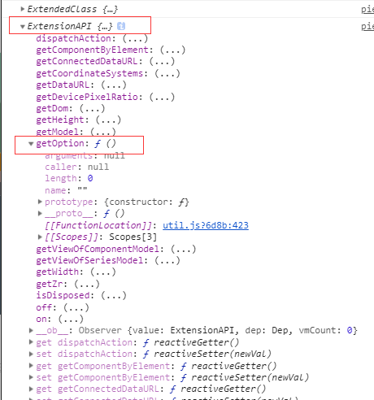

做excel2echarts项目的时候遇到的一个问题，当时还困扰了我好久都没做出满意的效果，最后在师傅的指点下顺利地完成了,也参考了挺多资料，所以记录一下。
效果
最后实现的效果是这样的，点击按钮能切换label的显示与隐藏状态：

参考代码
1 | toolbox: { |
解析
echarts配置详情参考官方文档，此处就不再赘述
toolbox.feature中的前几项：dataView，saveAsImage等都是官方自带的工具，只要设置其属性为
show:true即可使用。
自定义工具必须以my开头，这里我定义为myTool1。
工具内函数onclick触发setOption,将echarts图表的option.series[i].label.show，也就是所有数据的标签取反，从而实现显示隐藏标签。
但问题来了，我的echarts图表当初声明的时候为了调用方便，使用的写法是这样的：1
this.chart = echarts.init(document.getElementById(this.id))
我将echarts赋值给了vue全局的chart属性，在外边都是直接通过this.chart直接访问的，而toolbox里的函数调用this的话是指向toolbox
内部的（具体是哪个我忘了），获取不到整个chart，无法实现setoption更新数据。
这咋整呢，我第一反应是找方法能让子函数获取到父函数属性，折腾了半天都没成功（也不知道为啥）。
另一种方法是onclick不触发函数，直接写个箭头函数，手动把this.chart的里面所有的series的label.show属性全取反，但这样写出来的代码又臭又长，而且变通性差，数据series个数不一样就会报错。
最后还是老老实实去请教了师傅，师傅拉开控制台一顿输出，看了下onclick接收的参数居然有4个（我好蠢）

而其中的第二个参数是api列表，其中的getOption可以直接获取到chart的option，

然后再在声明echarts的代码下加一句：1
2this.chart = echarts.init(document.getElementById(this.id))
var that = this;
这样就可以在onclick函数中使用that.chart.setOption来更新chart图表的option啦~真是简单呢（爪巴